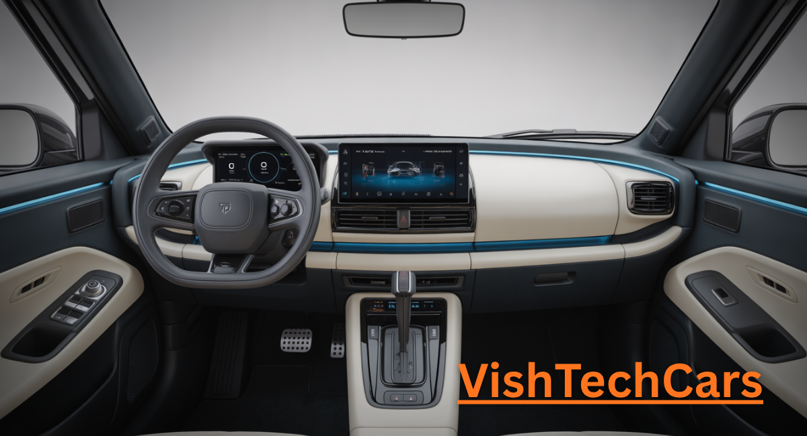

Maruti Ignis 2026: Why This Urban Icon Might Be Your Last Chance to Own a Quirky Legend

Inside This 2500+ Word Exclusive:
1. The 2026 Shock: Is Maruti Ignis Discontinued?
Recent Google Trends data from April 2026 has sent shockwaves through the automotive community. With over 20,000 searches for **"Maruti Ignis discontinued"**, the question is: What is Maruti Suzuki planning? As of today, our sources suggest that Maruti is moving its focus towards the **e-Vitara** and more SUV-centric designs like the **Fronx**.
While an official statement is still awaited, the 2026 model might be the 'Final Edition' of the Ignis. If you’ve ever wanted to own this urban SUV, 2026 is the year of 'Now or Never'. The quirkiness of the Ignis—those slab sides and the Adidas-stripe-like cuts on the C-pillar—might soon become a part of history.

2. Performance: The 1.2L Legend with a Hybrid Twist
Even in 2026, the 1.2-litre 4-cylinder K-series engine remains the most refined in its class. Unlike the 3-cylinder engines found in many rivals, the Ignis engine is silent and vibration-free. For the 2026 model, Maruti has added a **Smart Hybrid (SHVS)** system even to the manual variants to compete with the rising fuel costs.
The Real-World Numbers:
- Petrol Manual: 21.5 kmpl (Tested by VishTech)
- AMT (AGS): 22.1 kmpl
- CNG (Optional in 2026): 28.5 km/kg
3. Inside the Cockpit: Retro-Modern Vibes
The Ignis interior has always been about personality. The 2026 model continues with the aircraft-style toggle switches and the body-colored accents on the door handles and console. The infotainment has been upgraded to the **9-inch SmartPlay Pro+** screen, which we first saw in the Baleno. The seats remain high, offering that 'commanding' SUV-like view that short drivers absolutely love.
Maruti Ignis 2026 Master Specifications
| Feature | Specification |
|---|---|
| Engine | 1.2L K12N DualJet Petrol |
| Max Power | 89 bhp @ 6000 rpm |
| Max Torque | 113 Nm @ 4400 rpm |
| Safety | Dual Airbags, ABS, EBD, ESP (Standard) |
| Ground Clearance | 180 mm |
| Price Range | ₹5.99 Lakh - ₹8.45 Lakh* |

4. Safety: HEARTECT Platform & 2026 Standards
Safety has hounded the Ignis in the past, but the 2026 variant comes with a reinforced HEARTECT structure. Maruti has made **Electronic Stability Program (ESP)** and **Hill Hold Assist** standard across all variants (Sigma, Delta, Zeta, Alpha). While it might not be a 5-star GNCAP car yet, it feels much more planted on highways than the previous generations.
5. The Urban War: Ignis vs Tata Punch vs Hyundai Exter
In 2026, the micro-SUV segment is crowded. The **Tata Punch** offers ruggedness, and the **Hyundai Exter** offers a sunroof. So why buy the Ignis?
The answer is **Refinement**. The Ignis is lighter, faster, and much more fun to drive in tight city gaps. Its turning radius is so small it can almost spin on a coin. If your drive is 90% city and 10% highway, the Ignis still beats the Punch in terms of peppiness.
6. The VishTech Verdict: Should You Buy It?
If the rumors of discontinuation are true, the **Maruti Ignis** will become a collector's item. Just look at the old Maruti Zen or the Ritz—they still have a cult following. The Ignis offers a premium NEXA experience at a price that won't break your bank. It’s the perfect car for college students, small families, or as a second car for city errands.
Our Recommendation: Go for the **Zeta Manual variant**. It offers the best balance of features (Alloy wheels, Touchscreen, Fog lamps) and value for money.

Maruti Ignis 2026: FAQ (Frequently Asked Questions)
Q1. Is Maruti Ignis really getting discontinued in 2026?
Ans. While Maruti hasn't officially confirmed it, production cycles and trending market data suggest that Ignis might make way for a new entry-level electric SUV by late 2026 or 2027.
Q2. What is the ground clearance of the new Ignis?
Ans. It comes with a healthy 180mm ground clearance, which is enough to handle almost all Indian speed breakers.
Q3. Does Ignis 2026 have a sunroof?
Ans. No, Maruti has skipped the sunroof in Ignis to keep the pricing competitive and focus on cabin structural integrity.